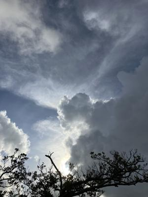

うるがいの話 ある日
最新: 特定検診【うるがいの話 ある日】とは 一日だけのプログです
『うるがいの話』の最新一日だけのプログで、通信料が少なく経済的だ。カニの画像をクリックすると全ての日付が載る『うるがいの話』サイトを表示します
|
|
【うるがいの話】 うるがい(ｳﾙｶﾞｲ urugai)とは、『もずくがに』の名前でとても大きくなります。 |
|---|---|
|
|
【カミマヤーの話】 猫のことを方言でマヤーといいます。カミマヤー（kamimayaa）とは、神の猫のことです。 |
|
【たながぁの音楽】 たながぁ（ﾀﾅｶﾞｰ tanagaa）とは手長えびのことで、何種類かあり大きいのは車 エビぐらいになります。 |

|
【ぶながぁの話】 ぶながぁ(ﾌﾞﾅｶﾞｰ bunagaa)とは、赤い髪の毛、赤い身体、そして身長は１ｍ２０ｃｍ ぐらい、川の蟹を食べているの目撃された。場所は沖縄県国頭郡大宜味村のと ある村僕の隣近所に住んでいる爺さんから、聞いた話です。 |
|
|
【ギーマの話】 ギーマ(giima)とは、山原の里山に咲くスズランに似た、 花を付けます。実は食べられます、 気が付くと口の周りが紫になっています。 |
2024年08月07日 (水）特定検診
18:29

座薬を投入しても、痛みが治まらなかったですが何か他にありますか？、『
あとは点滴か、注射ですよ』ホー、確かに経験はあります。特定検診の問診
した主治医（大学病院勤務）に懲りずに質問する。今回はかなり痛かったの
で予防のため、水を２リットル飲むようしました、しんどいです。『わかり
ます私も何度も尿路結石の経験ありますから、水をとらなければいけないと
知っていますが、手術などでなかなか・・・・』、おお、同志じゃん。泌尿
科の先生が、尿酸値を下げる薬を復活するようにアドバイスを受けましたと
報告。尿酸値を下げる薬が復活することになった。
問診のあと血液検査、いつもように左手を差し出す、『少し痛いですヨ、あ
れ、出ないですね、針を移動しますネ、アレ、出ないですね、また動かしま
すね、アレ・・・・、右手でやりましょう』、初めてです、左手で採血出来
なかったことはとぼやく。
１８時２４分 ビットコインの総資産 ￥２４、５４６（↑９８０）